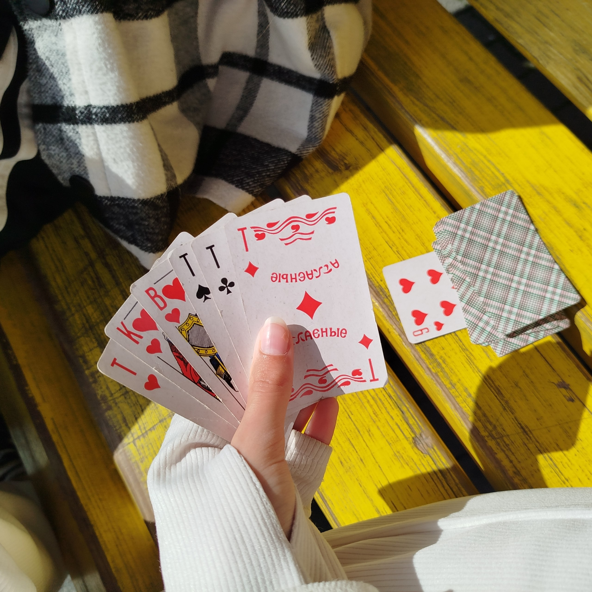
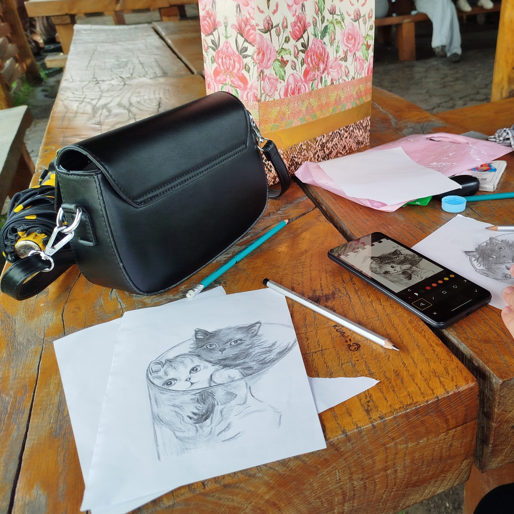
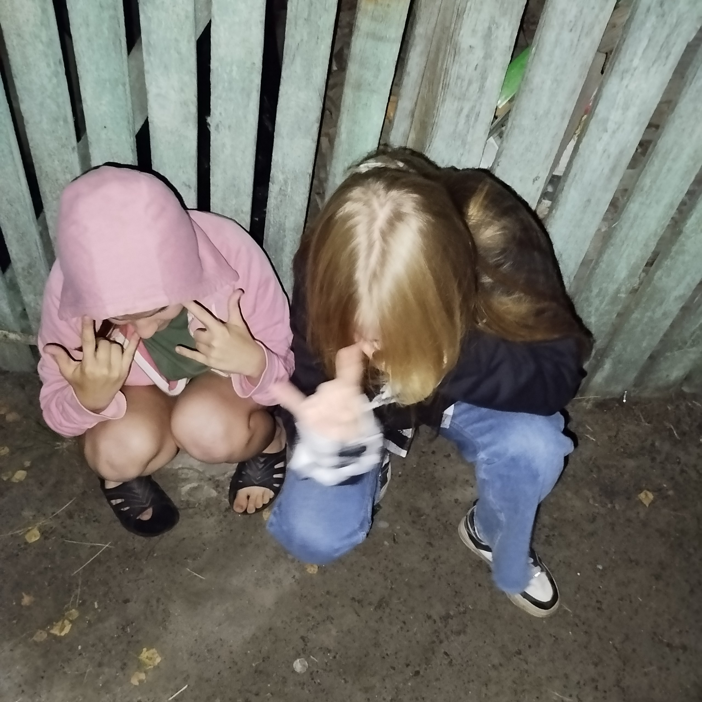
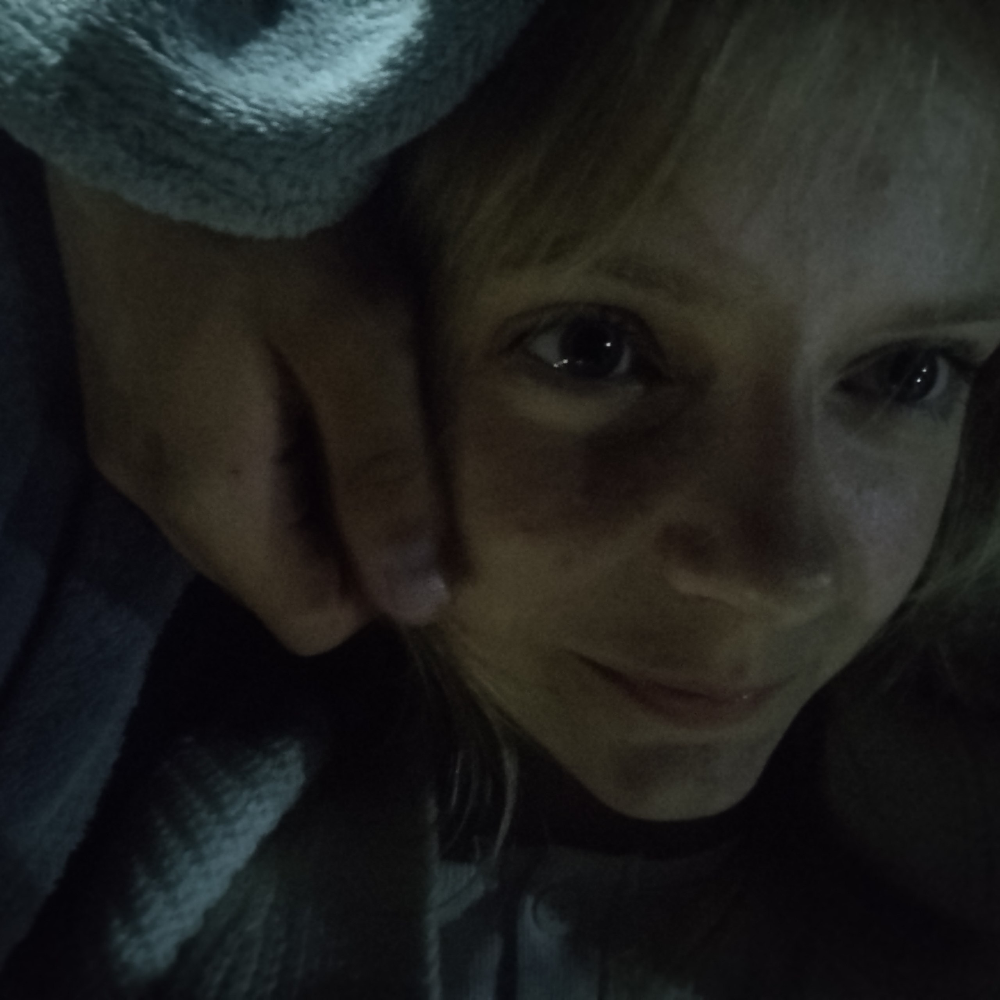
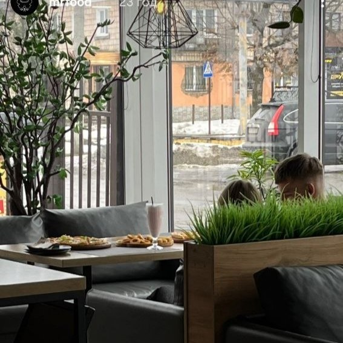
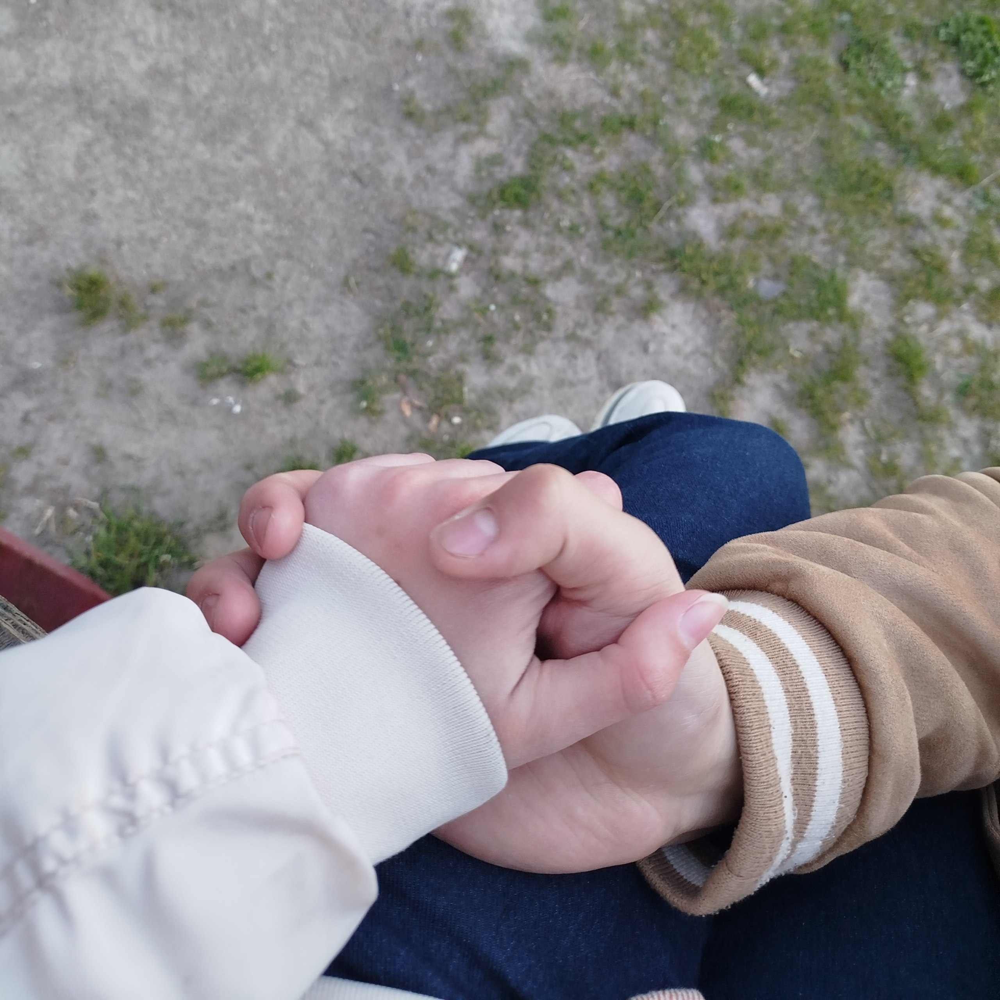

Знайшла в себе в галереї пару фото. Натискай на них, вони з описом ✨

Пам'ятаю, на початку відносин ми дуже багато грали в карти. Це мило, ми не могли придумати бажання одне одному. Скажи чесно, ти дійсно погано грав чи піддавався?

Ти чомусь соромився свого малювання, хоча воно в тебе не погане. Тоді ми трохи часто сварилися, ти часто приходив забирати мене після уроків малювання.

Я чесно не пам'ятаю за яких умов було зняте це фото, але здається тоді ми до 11 сиділи біля магазину.

Це був важкуватий час і це ледь не один нормальний момент з того періоду. Але фільм я досі пам'ятаю.

Хахахаха, це було прикольно. Єдиний хороший спогад з того дня.

Милий момент. Хоча я досі трохи крінжую з цього фото 😅